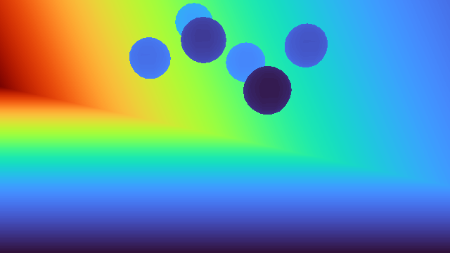
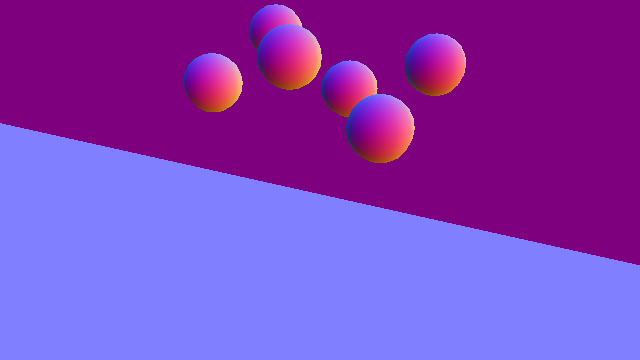
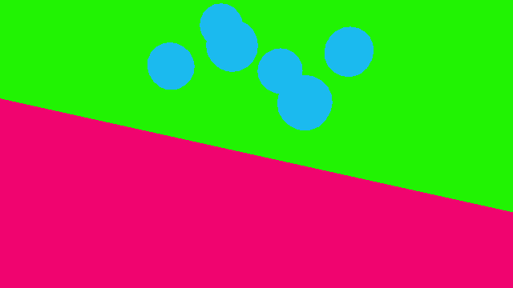
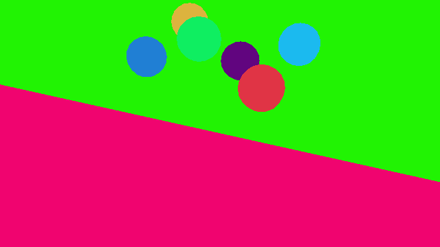

相机#
Camera 定义采集内容：相机位姿、投影方式、分辨率、采样周期和输出数据类型。渲染器定义这些图像如何生成。将两者的职责分开，同一相机配置就可以用于不同的物理和渲染后端。
与低维状态相比，相机数据的开销较大。因此，Isaac Lab 将克隆环境中的相机副本合并到平铺渲染批次中，并为每种请求的输出提供一个驻留在设备上的缓冲区，保存拆分平铺图像后的结果。
增加工作负载后，RTX 相机可能在不报错的情况下输出黑图或损坏的图像，详见 大规模 RTX 相机负载可能输出黑图或损坏的图像 。
渲染模型#
renderer_cfg 用于选择渲染器。普通的 RendererCfg 使用运行时默认值。如果必须固定渲染器，请使用具体的配置类型：
渲染器配置 |
需要 Isaac Sim |
特点 |
|---|---|---|
Yes |
通过 Isaac Sim 使用 Replicator 和 RTX 渲染 |
|
No |
通过 |
|
No |
通过 Newton 实现不依赖 Kit 的 Warp 光栅化 |
如果环境提供渲染器预设，应在启动时选择渲染器，而不是修改场景配置。请同时传入 physics= 和 renderer=，确保渲染器与所选安装方案匹配。下面的命令适用于不依赖 Kit 的 Newton 方案；使用 Isaac Sim 时，应设置 physics=isaacsim_physx renderer=isaacsim_rtx，并添加 --extra isaacsim。各组合的说明见 选择与配置渲染器 ：
uv run isaaclab train --rl_library rsl_rl \
--task Isaac-Cartpole-Camera-Direct \
physics=newton_mjwarp renderer=newton_renderer presets=rgb
uv run isaaclab train --rl_library rsl_rl ^
--task Isaac-Cartpole-Camera-Direct ^
physics=newton_mjwarp renderer=newton_renderer presets=rgb
图像默认不会写入磁盘。设置 env.write_image_to_file=true ，可在当前工作目录中写入 cartpole_<data_type>.png 。
预设查找方法见 后端与预设 ；同一场景下各渲染器输出的对比见 渲染器输出概览 。
使用 OVRTX 时，如果不同相机传感器的渲染器配置相同，它们会共享场景和渲染器，但各传感器分别拥有自己的平铺渲染产品。例如， env_0/head_camera 和 env_1/head_camera 构成一个产品， env_0/wrist_camera 和 env_1/wrist_camera 则构成另一个。各传感器可以使用不同的分辨率和输出类型，位姿也独立更新。请在初始化仿真前定义所有相机 prim，确保它们包含在导出到 OVRTX 的场景中。
配置相机#
相机可以生成针孔或鱼眼相机 prim，也可以绑定舞台上已有的相机。 offset 使用 OffsetCfg 中声明的坐标约定：
world：前方为+X，上方为+Z。ros：前方为+Z，上方为-Y。opengl：前方为-Z，上方为+Y。
import isaaclab.sim as sim_utils
from isaaclab.sensors import CameraCfg
from isaaclab_newton.renderers import NewtonWarpRendererCfg
front_camera = CameraCfg(
prim_path="{ENV_REGEX_NS}/Robot/base/front_camera",
update_period=0.05,
height=240,
width=320,
data_types=["rgb", "depth", "normals"],
spawn=sim_utils.PinholeCameraCfg(
focal_length=24.0,
horizontal_aperture=20.955,
clipping_range=(0.1, 20.0),
),
offset=CameraCfg.OffsetCfg(
pos=(0.45, 0.0, 0.1),
rot=(0.0, 0.0, 0.0, 1.0),
convention="world",
),
renderer_cfg=NewtonWarpRendererCfg(),
)
只有相机使用相同具体类型且配置值相等的渲染器配置时，才会复用渲染器实例。不同的渲染器设置会创建不同实例。相机配置（包括输出类型和背景）仍由各传感器分别维护。
读取相机数据#
output 将各请求的名称映射到 ProxyArray 。对于 N 个相机视图、高度 H 、宽度 W 和 C 个通道，各输出的形状为 (N, H, W, C) 。使用 torch 获取缓存的零拷贝 Torch 视图，或使用 warp 获取底层 Warp 数组：
camera_data = scene["front_camera"].data
rgb = camera_data.output["rgb"].torch
depth = camera_data.output["depth"].torch
intrinsics = camera_data.intrinsic_matrices.torch
相机位姿和内参缓冲区同样是 ProxyArray 对象。 pos_w 的形状为 (N, 3) ， intrinsic_matrices 为 (N, 3, 3) ，相机四元数为 (N, 4) ，分量顺序为 (x, y, z, w) 。仅在需要最新位姿数据时设置 update_latest_camera_pose=True ，因为更新会增加坐标系查询开销。
输出类型#
当前渲染器会验证 data_types ，并按其 RenderBufferSpec 声明的通道数量和数据类型分配缓冲区。
名称 |
通道数和类型 |
含义 |
|---|---|---|
|
3 / 4， |
低动态范围颜色 |
|
3， |
场景线性高动态范围颜色 |
|
4， |
材质基色 |
|
1， |
沿相机光轴的距离 [m] |
|
1， |
到光心的欧氏距离 [m] |
|
3， |
局部表面法线 |
|
2， |
图像空间中的运动； |
|
4 个 |
每像素的语义颜色或 ID |
|
4 个 |
每像素带语义标签的实例颜色或 ID |
|
4 个 |
每像素 USD prim 实例的颜色或 ID |
depth 是 distance_to_image_plane 的别名。彩色分割使用 RGBA uint8 ；非彩色分割使用单个 int32 ID 通道。标签和 prim 路径映射保存在 camera_data.info[output_name] 中。

Isaac RTX RGB 输出。动画展示六个不同材质的球体落到桌面上的过程。#

Isaac RTX 深度输出。显示颜色表示沿光轴的距离；传感器返回以米为单位的数值 [m]。#
渲染器支持情况#
统一 API 并不意味着每个渲染器都能生成全部输出。各后端在同一场景下的示例见 渲染效果对比 。当前支持情况如下：
输出 |
Isaac RTX |
OVRTX |
Newton Warp |
|---|---|---|---|
|
Yes |
Yes |
Yes |
|
Yes |
Yes |
Yes |
|
Yes |
Yes |
Yes |
|
Isaac Sim 6.0+ |
Yes |
Yes |
|
Yes |
Yes |
No |
语义分割和实例分割 |
Yes |
Yes |
Yes |
|
Yes |
No |
No |
|
Isaac Sim 6.0+ |
Yes |
No |
请求不受支持的输出会在相机初始化时失败。对于后端特有的选项，语义过滤、分割着色和深度截断由渲染器配置控制。

Isaac RTX 法线输出。红、绿、蓝分别表示表面法线的 X、Y、Z 分量。#

Isaac RTX 语义分割。每种颜色表示一个类别：六个球体属于同一类，桌面和背景分别属于其他类别。#

Isaac RTX 实例分割。每个球体都有自己的颜色，可以区分属于同一语义类别的不同物体。#
背景颜色#
当 background_color 为 None 时，各渲染器使用默认背景。设置归一化 RGB 元组，可为未命中任何几何体的像素指定纯色背景：
from isaaclab.utils import replace
mask_camera = replace(front_camera, background_color=(0.0, 0.0, 0.0))
该设置按相机生效。使用渲染器默认背景的相机和使用纯色背景的相机可以共存于同一场景。
渲染后的图像信号处理#
isp_cfg 可选择对渲染器的场景线性 HDR 输出执行图像信号处理（ISP）。随附实现为 PPISP（Physically Plausible Image Signal Processing，物理合理的图像信号处理），它在写入 rgb 或 rgba 前应用响应度、曝光、渐晕、颜色校正和相机响应函数。
该字段接受：
None：禁用渲染后的 ISP。PpispCfg：使用显式系数，或从 USD 相机导入的系数。CameraISPMode：查找相机 prim 上的ppisp:*属性。
from isaaclab.sensors.camera import CameraCfg, CameraISPMode
from isaaclab.utils import replace
from isaaclab_ppisp import PpispCfg
explicit_isp = replace(front_camera, data_types=["rgb"], isp_cfg=PpispCfg(inputs={"exposureOffset": 1.5}))
discovered_isp = replace(front_camera, data_types=["rgb"], isp_cfg=CameraISPMode.AUTO_CAMERA)
AUTO_CAMERA 检查第一个匹配的相机 prim。 AUTO_ANY 在未找到时，会回退到舞台上任意位置的第一个 PPISP 相机。查找仅在构造相机时执行一次。
Isaac RTX、OVRTX 和 Newton Warp 都可集成 PPISP。它要求输出包含 rgb 或 rgba 。同一相机批次中所有克隆视图共享静态配置；控制器权重可以预测各视图的曝光和颜色参数，其余系数仍然共享。ISP 配置和查找到的 USD 属性在相机的整个生命周期内保持固定。
重要
使用 Isaac RTX 和 OVRTX 时，启用 isp_cfg 后由 PPISP 统一负责 ISP。渲染器会禁用 RTX 自动曝光，将 exposure:* 属性设置为中性值，并在每个匹配的相机 prim 上应用 OmniRtxCameraAutoExposureAPI_1 和 OmniRtxCameraExposureAPI_1 模式，避免 RTX 对图像重复处理。请勿将 isp_cfg 与另行设置的 RTX 曝光或色调映射配置混用。 isp_cfg 为 None 时，渲染器不会改变相机上已有的曝光设置。
运行 ppisp-camera 示例可体验完整的 PPISP 工作流。它支持 --renderer newton_renderer （Newton Warp，默认）和 --renderer isaac_rtx （Isaac RTX）。保存图像前，Newton Warp 默认预热 0 步，Isaac RTX 默认预热 32 步，可通过 --warmup_steps 修改。
uv run --extra isaacsim isaaclab example ppisp-camera \
--renderer newton_renderer --max_steps 60
uv run --extra isaacsim isaaclab example ppisp-camera \
--input_scene /path/to/scene.usd --renderer isaac_rtx \
--camera_prim_path /usd/path/to/camera --max_steps 60
uv run --extra isaacsim isaaclab example ppisp-camera ^
--renderer newton_renderer --max_steps 60
uv run --extra isaacsim isaaclab example ppisp-camera ^
--input_scene C:/path/to/scene.usd --renderer isaac_rtx ^
--camera_prim_path /usd/path/to/camera --max_steps 60
--input_scene 接受本地路径或 URL，指向包含 Gaussian PPISP 配置的 USD 或 USDZ 场景。省略时，示例使用 ISAAC_NUCLEUS_DIR 下的 Samples/Scene_ParticleField/valiant_auto.usdz 样例。
--camera_prim_path 是可选参数，用于指定输入场景中相机的绝对 USD prim 路径。请将上面两条命令中的 /usd/path/to/camera 替换为自己场景中的相机路径。该 prim 必须存在，类型为 Camera，并具有 ppisp:* 属性。省略时，示例选择第一台具有 PPISP 属性的相机。无论使用哪种渲染器，输入场景都必须设置 defaultPrim，且相机必须位于它的层级之下。例如，相机路径为 /World/Cameras/front_cam 时，需要将 /World 设为 defaultPrim。
图像默认保存到当前工作目录下的 output/ppisp_camera，可用 --output_dir 修改。--max_steps 设置预热后的运行步数，默认 120；--save_interval 设置图像保存间隔，单位为步，默认 20。完整选项可通过 uv run --extra isaacsim isaaclab example ppisp-camera --help 查看。
性能与验证#
图像内存占用和渲染开销随环境数量、分辨率、通道数及请求的输出数量增长。开始运行基于相机的任务时，先使用少量环境，检查数据形状和渲染器支持情况，再逐步扩大规模，同时监控显存占用。避免请求任务不使用的缓冲区。
平铺渲染将克隆视图合并到共享渲染批次中，但无法消除拆分后的输出或下游视觉模型的内存开销。相机遵循传感器通用的 update_period 约定；应根据观测频率选择周期，而不是默认在每个物理步渲染。
可运行的相机示例名为 camera ：
uv run --extra isaacsim isaaclab example camera
保存输出到磁盘的方法见 保存渲染图像和 3D 重投影 。选择和自定义渲染器的方法见 选择与配置渲染器 。